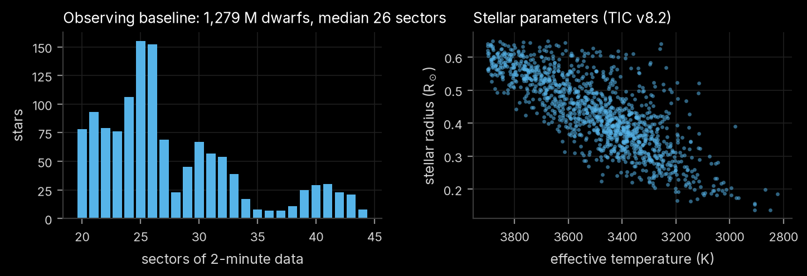

Chapter 1 of 8
This chapter describes the stars that were searched, how their light curves were prepared, and how periodic transit signals were found. Vetting (Chapter 2) and everything after it operate on the detections produced here.
The search targets the M dwarfs that NASA's Transiting Exoplanet Survey Satellite (TESS) has observed for the longest. An Earth-sized planet blocks about 0.008% of a Sun-like star's light but about 0.1% of a 0.3 R☉ M dwarf's, so small stars are where small planets are easiest to see. Stars near the ecliptic poles fall in TESS's continuous viewing zones and have been re-observed for years, which accumulates hundreds to thousands of transits for short orbits and makes Earth-sized signals detectable.
Candidates for the sample were drawn from every Science Processing Operations Center (SPOC) 2-minute
light curve released for Sectors 1–107: 1,735,111 light-curve files of 592,592 stars, parsed from
MAST's per-sector download lists (scripts/01_select_targets.py). Sectors were counted per star, the
TESS Input Catalog (TIC v8.2) was queried for the 15,737 stars with at least 15 sectors, and a star was
kept if it satisfied all of:
| criterion | value | reason |
|---|---|---|
| sectors of 2-minute data | ≥ 20 | long baselines; many transits per orbit |
| effective temperature | ≤ 3,900 K | approximately the M spectral class |
| stellar radius | ≤ 0.65 R☉ | excludes evolved and K-type stars |
| TESS magnitude | ≤ 13.5 | photometric precision |
| luminosity class | dwarf | main-sequence stars only |
| TIC contamination ratio | ≤ 0.2 | limits dilution by neighbours |
| TIC disposition | none | removes catalogue duplicates and artefacts |
The selection yields 1,279 M dwarfs with 20–44 sectors each (median 26), 2,821–3,900 K (median 3,473 K), 0.14–0.65 R☉ (median 0.43 R☉) and T = 8.1–13.5.

NASA's most recent combined multi-sector search of these stars (SPOC, Sectors 1–96) predates Sectors 97–107; this search uses all of them.
For each star every sector's SPOC light curve is downloaded, the columns the search needs are kept in one
compressed file per star (tess_search/download.py), and the light curve is prepared as follows
(tess_search/lightcurve.py):
QUALITY = 0 and finite PDCSAP flux and error are used.wotan, Hippke et al. 2019) with a 0.5-day window
removes starspot modulation and instrumental drifts. The window is several times longer than any
transit searched for. For strongly spotted fast rotators (Lomb–Scargle peak power > 0.3, peak-to-peak
variability > 0.3%), the window is shortened to P_rot/6, but never below 0.3 d, so that rotation does
not leak into the search.The stellar rotation period used in step 4 comes from a Lomb–Scargle periodogram of 30-minute bins, computed per sector over 2.4 h to 13 d; the sector with the median peak power supplies the period. It is stored and later used to flag signals at the rotation period.
Eight years of data with year-long gaps make a single coherent box-least-squares (BLS) search
expensive: keeping transit phase aligned over the whole ~2,700-day baseline needs roughly ten times the
trial periods of a single season (of order a million per star), each evaluated on hundreds of thousands
of points. The search instead runs BLS (Kovács et al. 2002, astropy)
separately on each season, on one shared period grid, and adds the seasons' log-likelihoods:
A real planet raises the likelihood at its period in every season, so the sum grows with the number of seasons; noise peaks land at different periods in different seasons and average out. Because BLS with per-point errors gives \(\ln\mathcal{L} = \tfrac{1}{2}\,\mathrm{SNR}^2\) for the best box, the stacked value converts to an incoherent signal-to-noise ratio \(\sqrt{2\ln\mathcal{L}}\).
Details:
Each periodogram peak is refined by a coherent BLS on all data together, over ±30 coherent peak widths around the seasonal period with a step of \(P \cdot D_{\min} / (5\,T_{\rm span})\) and ten-fold phase oversampling. This pins the period down to ~10⁻⁶ d for short orbits and yields the epoch, duration, depth, depth error and a coherent box SNR.
After each detection its transits are masked (a window of twice the transit duration, centred on each transit) and the search repeats, up to five signals per star, so that multi-planet systems are found. The loop stops when the strongest remaining peak falls below SDE = 7 or a refined signal falls below SNR = 7. These thresholds are deliberately loose; vetting decides what survives.
The full search of 1,279 stars took about 4.5 hours on a fanless MacBook Air (Apple M2, three to four
worker processes, median 33 s per star) under a thermal guard that pauses work at the operating system's
"serious" thermal-pressure level (tools/thermal/). It produced 1,560 periodic signals, of which
1,139 had SNR ≥ 6 and were vetted.
Every vetted signal is compared with five public lists (tess_search/crossmatch.py,
downloaded by scripts/03_catalogs.py):
| list | source |
|---|---|
| TESS Objects of Interest (TOIs) | ExoFOP-TESS |
| Community TOIs (CTOIs) | ExoFOP-TESS |
| confirmed planets | NASA Exoplanet Archive (pscomppars) |
| TESS eclipsing binaries | Prša et al. (2022), VizieR J/ApJS/258/16 |
| SPOC Threshold Crossing Events | all 132 single- and multi-sector SPOC data-validation runs |
A detection matches a known signal on the same star if the two periods agree within 0.3%, or stand in a simple ratio (1:2, 2:1, 1:3, 3:1, 2:3, 3:2) within 0.3%, since pipelines often report half or double the true period. The SPOC TCE lists matter: they contain every signal NASA's pipeline detected, including those its human vetting team never promoted to TOIs. A signal is labelled new only if it matches nothing in any list; SPOC TCE only if it matches a TCE but no TOI, CTOI or confirmed planet.
wotan)